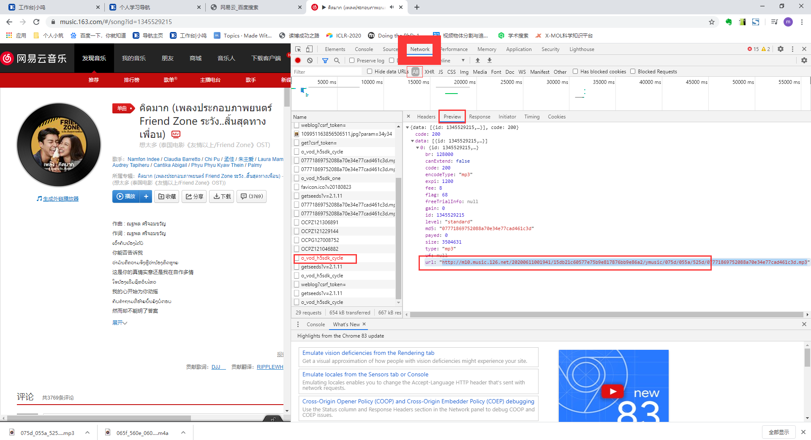

方法汇总
一、Bilibili视频下载方法：
1、源码地址：https://gitee.com/miclover/you-get
2、python setup.py install
3、you-get '视频地址'
二、window10自带截屏：
1、使用方法：win+G调取
2、保存路径：C:\Users\miclover\Videos\Captures
三、VSCode配置python运行环境：
1、路径：文件->首选项->设置->输入python找到python path选项
四、国内开源镜像：
清 华 源：-i https://pypi.tuna.tsinghua.edu.cn/simple
阿 里 源：-i https://mirrors.aliyun.com/pypi/simple
中 科大源：-i https://pypi.mirrors.ustc.edu.cn/simple/
五、在线查看网络结构:netron：
网站链接https://lutzroeder.github.io/netron/
点击Open Model，打开相应的网络模型文件即可。
运行效果截图：
六、tensorboard可视化（events.out.tfevents文件）
tensorboard --logdir=G:\RLcode --port=8008
tensorboard可视化
其中G:\RLcode是你events.out.tfevents文件所在的文件目录。
后面--port=8008是开启可视化的“地址”，修改 --port= 后面的数字可以同时可视化多个不同的events.out.tfevents文件，如tensorboard --logdir=G:\DLcode --port=8006。
终端输入后，会有提示的网址将其复制到火狐浏览器或者google浏览器即可。
七、网易云下载歌曲
F12->Network->All->v1?...->Preview->url
